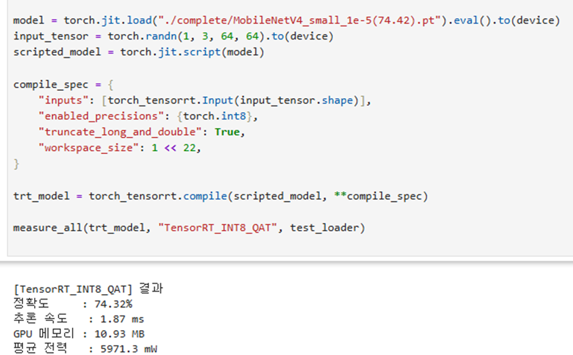
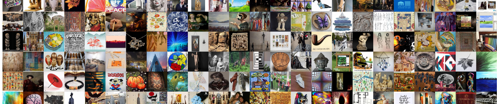
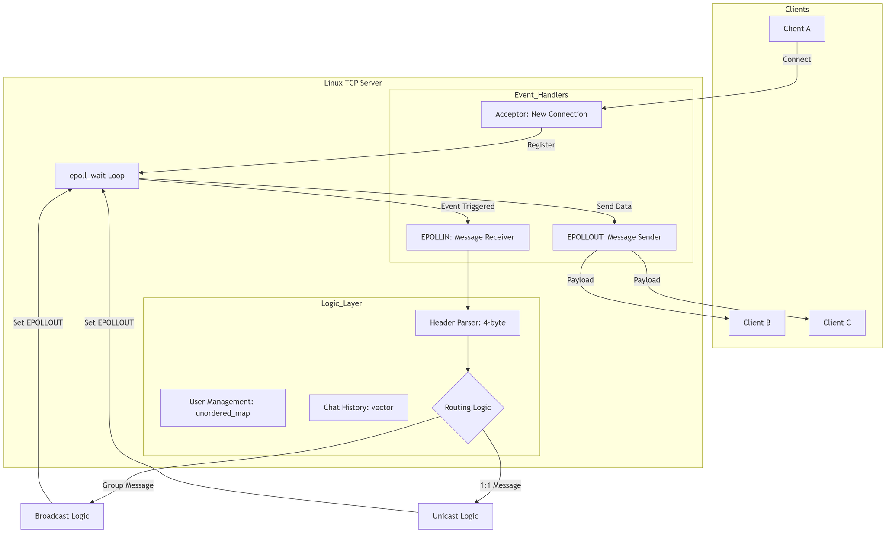
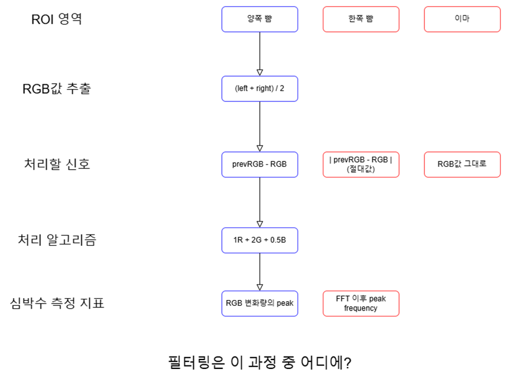
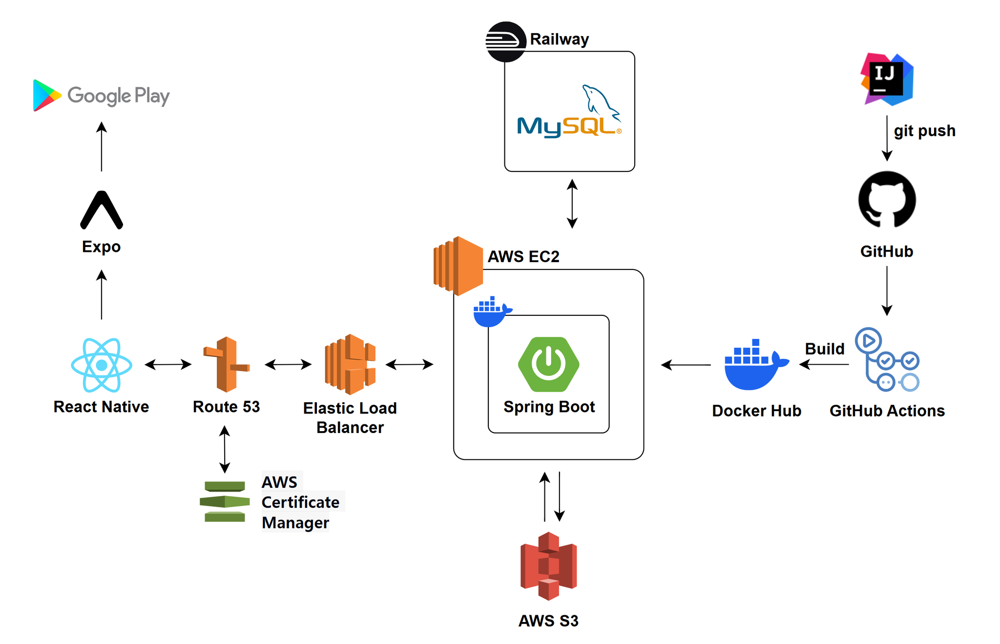
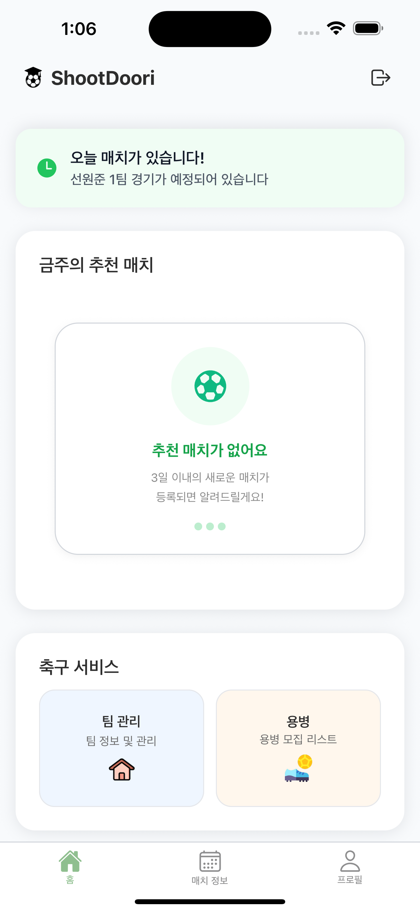

비즈니스 문제를 해결하고 사용자에게 가치를 전달할 수 있는 탄탄한 소프트웨어를 만드는 것을 목표로 합니다.
| 프로젝트 (1) |
프로젝트명 | 엣지AI를 위한 초경량 이미지 분류 모델 최적화 (3페이지) | ||
|---|---|---|---|---|
| 기 간 | 2025.05 ~ 2025.06 | 참여 인원 | 1명 | |
| 개 요 | Jetson Orin Nano 환경에서 이미지 분류를 빠르게 처리할 수 있도록 모델을 경량화하고자 함 | |||
| 기술 환경 | Jetson Orin Nano, Pytorch, TensorRT, QAT | |||
| 담당 역할 | 데이터 분석, 최신 모델 파인튜닝 | |||
| 프로젝트 (2) |
프로젝트명 | Windows와 Linux 간 소켓 통신 채팅 (4페이지) | ||
|---|---|---|---|---|
| 기 간 | 2025.06 ~ 2025.06 | 참여 인원 | 1명 | |
| 개 요 | 운영체제 중심의 통신 구조, 시스템 레벨 네트워크 지식, 소켓 프로그래밍 이해도를 증명하기 위해 개발한 멀티 플랫폼 채팅 어플리케이션 | |||
| 기술 환경 | C++, Linux | |||
| 담당 역할 | 서버 및 클라이언트 개발 | |||
| 프로젝트 (3) |
프로젝트명 | AI를 사용한 remote PPG 프로그램 개발 (5페이지) | ||
|---|---|---|---|---|
| 기 간 | 2024.08 ~ 2025.05 | 참여 인원 | 3명 | |
| 개 요 | rPPG 학습의 한계점인 데이터셋 부족 문제를 극복하고자 함 | |||
| 기술 환경 | Pytorch, Mediapipe, OpenCV | |||
| 담당 역할 | 데이터셋 제작 프로그램 개발, 심박수 추론 프로그램 개발 | |||
| 프로젝트 (4) |
프로젝트명 | 실력 맞춤 지역 스포츠 매칭 플랫폼 개발 (6페이지) | ||
|---|---|---|---|---|
| 기 간 | 2025.08 ~ 2025.11 | 참여 인원 | 6명 | |
| 개 요 | 지역 대학생들이 자유롭게 스포츠 팀을 꾸릴 수 있는 플랫폼 구성 | |||
| 기술 환경 | Java, Spring Boot, MySQL | |||
| 담당 역할 | RESTful API 개발, 경기 매칭 로직 설계 | |||


Jetson Orin Nano 기반 엣지 디바이스에서 높은 리소스 효율과 성능을 낼 수 있도록 MobileNetV4 기반의 초경량화 비전 분류 모델을 최적화한 프로젝트입니다.
1. 양자화(QAT) 과정 중 정확도 하락 및 발산:
- 상황: 초기 높은 학습률로 인해 QAT(Quantization Aware Training) 환경에서 모델이 수렴하지 못하고 정확도가 크게
떨어졌습니다.
- 해결: AdamW 옵티마이저로 오버피팅을 방지하고, Cosine Annealing 스케줄러를 적용하여 세밀하게 가중치를 업데이트한 결과 INT8 양자화
상황에서도 정확도를 2%p 향상시켰습니다.
2. 딥 네크워크 기울기 소실 문제 파악:
- 상황: 모델의 레이어(블록 13개)를 깊게 쌓았을 때 되려 인식 성능이 하락하는 문제를 파악했습니다.
- 해결: Residual Connection(잔차 연결)을 추가 적용하여 Gradient Vanishing을 예방하고, 실험을 거쳐 성능 하락이 방어되는
최적의 블록 수(8개)로 구조를 최적화했습니다.

운영체제 중심의 통신 구조, 시스템 레벨 네트워크 지식, 소켓 프로그래밍 이해도를 증명하기 위해 기초적인 통신 프로토콜 단계부터 개발한 멀티 플랫폼 채팅 어플리케이션입니다.
1. 이기종 OS 간 인코딩 호환성 문제:
- 상황: Linux(Ubuntu)는 기본 시스템 환경에서 UTF-8을 사용하지만, Windows는 CP949 인코딩을 사용하여 상호 통신 시 한글이
심각하게 깨지는 현상이 발생했습니다.
- 해결: 서버 측에서 모든 메시지를 UTF-8로 통일시켜 관리하되, 클라이언트 애플리케이션 수신/송신단(Windows 클라이언트 측)에서만
WideCharToMultiByte 등의 윈도우 API를 사용해 문자열 인코딩 변환 처리를 수행하도록 구조를 개편했습니다. 이를 통해 서버의 플랫폼 독립성과 확장성을 완벽히 보장했습니다.

웹캠 영상만으로 사용자의 안면 혈류 변화를 분석하여 심박수를 측정하는 비접촉식 AI 솔루션입니다.
1. 얼굴 인식 지연 문제
해결:
- 상황: OpenCV에 기본적으로 내장된 HaarCascade로는 30fps 웹캠의 성능을 이끌어내지 못하고 병목이 발생하는 문제가 생겼습니다.
- 해결: 여러 라이브러리를 사용해보고 성능을 비교하여 Mediapipe를 채택 후 웹캠의 성능을 이끌어내어 문제를 해결했습니다.
2. VRAM 부족(OOM) 문제
해결:
- 상황: 고해상도 영상을 그대로 메모리에 올리면서 GPU Out-Of-Memory 오류가 빈번히 발생했습니다.
- 해결: 얼굴 영역 검출(Cropping) 파이프라인을 추가하여 입력 이미지 사이즈 자체를 축소시키고, 배치(Batch) 조절을 통해 제한된 리소스 내에서
원활하게 학습시켰습니다.


지역 기반으로 스포츠 팀과 매치를 생성하고 용병을 모집하며, 실력 기반 리뷰를 남길 수 있는 모바일 플랫폼 서비스입니다.
1. 객체지향적 설계 개선:
- 상황: Service Layer에서 도메인 객체(Team)의 상태를 직접 검사하는 방식 때문에 코드 결합도가 매우 상승해 있었습니다.
- 해결: 상태 검증 로직을 해당 메인 객체 내부로 캡슐화(메서드 위임)하여 결합도를 대폭 낮췄습니다.
- 결과: 요구사항 변경 시 유지보수 및 수정에 소요되는 시간을 절반 수준으로 단축했습니다.
2. 복잡한 매칭 시스템 설계:
- 상황: 다수의 사용자가 동시에 매칭을 요청하거나 팀 신청을 할 때 상태 관리가 복잡하여 충돌 문제가 발생했습니다.
- 해결: 팀 신청, 매칭 완료, 용병 모집 등 복잡한 상태 흐름을 ERD를 작성하며 설계하여 문제를 해결하였습니다.